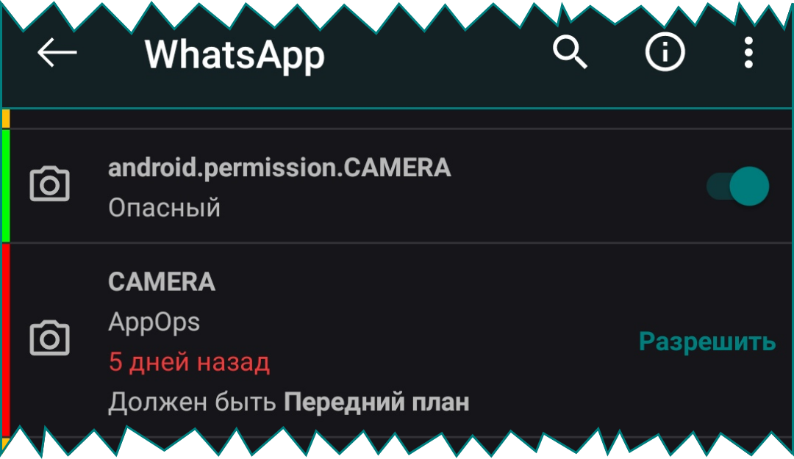
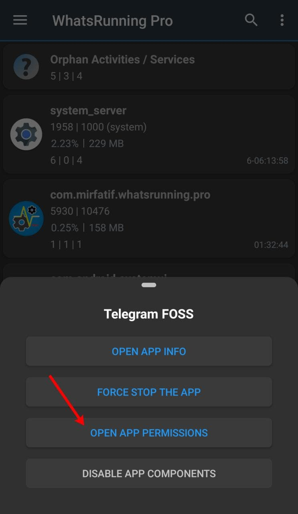
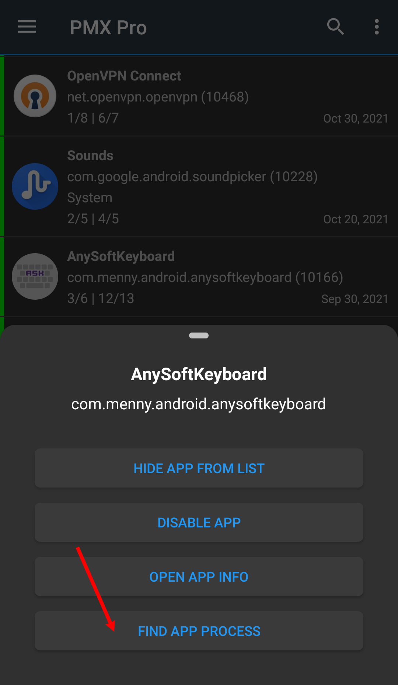
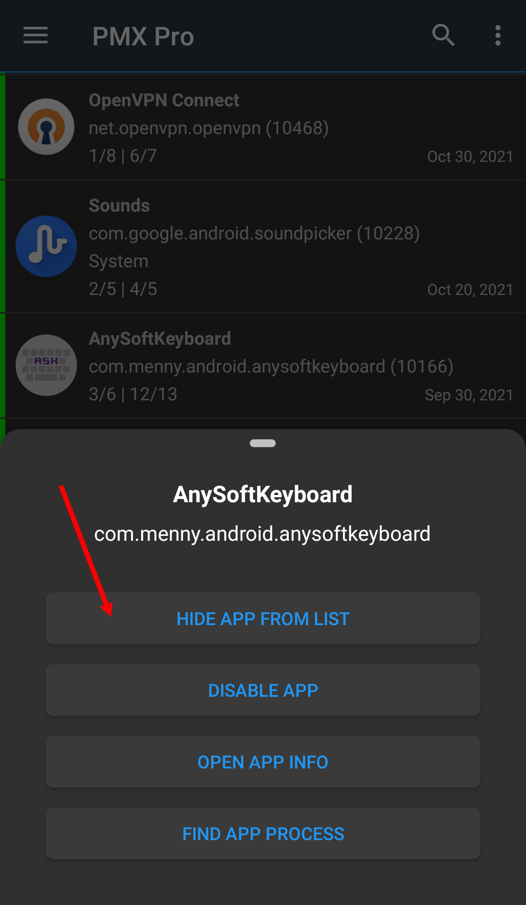
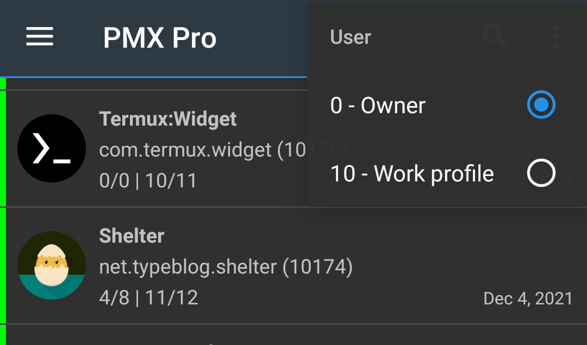

Permission Manager X
Содержание
Что такое PMX?
Это приложение является расширенным диспетчером разрешений, которое позволяет легко настраивать и просматривать желаемые разрешения для установленных приложений, а так же отслеживать любые нежелательные изменения. Давая контроль над вашим устройством, оно позволяет вам защитить вашу конфиденциальность и сэкономить ресурсы, такие как использование батареи.
PMX предоставляет на одном экране всю разрозненную (или недоступную по другим причинам) информацию и элементы управления, связанные с разрешениями, так что вы можете просматривать и контролировать их комплексным и удобным способом.
Используя PMX вы можете:
- Просматривать / предоставлять / отменять (отзывать) все разрешения манифеста, которые возможно или невозможно настроить с помощью настроек приложения. Список разрешений, которые нельзя настроить из графического интерфейса (GUI), очень длинный.
- Просматривать все разрешения AppOp, которые обычно не имеют графического интерфейса для настроек. Например изменение разрешений "Система-Фиксированный" возможно только при работе в варианте "Система". Например разрешения AppOp VIBRATE and READ_CLIPBOARD. Вы можете установить желаемый режим AppOp, например Передний план.
- Просматривать все не изменяемые разрешения, запрошенные приложением.
- Просматривать время последнего использования многих разрешений AppOp.
- Изменять разрешения уровня Система-Фиксированный, которые нельзя изменить никакими другими способами.
- Наблюдать в реальном времени за изменениями разрешений или выполнять проверки по расписанию.
- Сортировать приложения и разрешения по многим параметрам, включая дату и количество разрешений.
- Делать сложные поисковые запросы в приложениях и их разрешения.
- Размораживать/замораживать приложения.
Ознакомьтесь с README на Github и подробным описанием приложения в Play Store. Или попробуйте. По большей части это бесплатно.
Что такое разрешения манифеста и AppOps?
Оба являются базовыми механизмами контроля разрешений в операционной системе Android.
"Разрешения манифеста" называются так, потому что приложение должно запросить их в своем файле AndroidManifest.xml. Вы можете разрешить приложению использовать камеру или читать ваши контакты, верно? android.permission.CAMERA и android.permission.READ_CONTACTS:
оба этих разрешения являются разрешениями манифеста.
Но что, если вы хотите разрешить приложению использовать камеру или читать ваши контакты только тогда, когда приложение используется на переднем плане?
Или если вы хотите запретить приложению управлять вибрацией или читать буфер обмена? Это достигается через AppOp. Короче говоря, AppOps обеспечивает дополнительный и более детальный контроль над обычными разрешениями.
Разрешения манифеста не всегда изменяются в зависимости от их уровня защиты и привилегированного состояния приложения. Например:
-
Вы не можете отозвать разрешение android.permission.INTERNET, потому что оно имеет уровень защиты Нормальный. Ни одно из разрешений Internet не имеет соответствующего разрешения AppOp.
-
android.permission.VIBRATE - это еще одно разрешение манифеста с уровнем защиты Нормальный. Но у него есть соответствующее разрешение AppOp, которое вы можете разрешить или запретить.
-
«android.permission.SET_TIME_ZONE» это разрешение с уровнем защиты Подпись, поэтому оно не может быть предоставлено приложениям, установленным пользователем.
С каждым новым выпуском оба типа разрешений тесно интегрируются. Например, в последних выпусках Android приложения не могут использовать микрофон в фоновом режиме. Это достигается за счет использования разрешений манифеста и AppOp.
PMX показывает полный список разрешений манифеста и AppOp, которые использует приложение, в виде простого списка. Так что вы можете знать и контролировать их так, как вы хотите.
Целевые значения разрешений
Предположим, вы потратили все воскресенье на то, чтобы настроить разрешения для более 200 установленных приложений. И:
- В следующем месяце вы обновили ваше устройство или установили новую прошивку.
- Или по какой-то причине вы удалили и переустановили несколько приложений.
- Или вы предоставили несколько разрешений по запросу приложений.
Пройдете ли вы через эту возню еще раз?
Вам это не требуется. Вы можете заставить PMX запоминать желаемые состояния разрешений. Задайте разрешение, установите его статус как ЗЕЛЕНЫЙ, готово. Понадобится всего несколько минут, чтобы просмотреть все установленные пакеты и выяснить, какие разрешения установлены неправильно, например. выполнив быстрый поиск: «:КРАСНЫЙ|:ОРАНЖЕВЫЙ» или «!:ЗЕЛЕНЫЙ». Смотрите Поиск для получения более подробной информации.
Целевые значение можно удобно бэкапить и восстанавливать.
Долгим нажатием на разрешение можно установить или очистить его целевое значение.
Есть три целевых значения:
-
Оранжевый означает, что целевое значение разрешения не установлено.
-
Зелёный означает, что текущее значение соответствует целевому.
-
Красный означает, что текущее и целевое значения различаются.
App List

-
Цветная полоска слева — индикатор целевых значений
-
Первая строка показывает название приложения
-
Вторая строка показывает имя пакета и UID
-
Третья строка (необязательно) показывает состояние пакета: критический (фреймворк), фреймворк или системное приложение. Также, если приложение заморожено. Состояния незамороженых пользовательских приложений не отображаются.
-
Последняя строка показывает количество видимых разрешений из общего манифеста и разрешений AppOps. Невидимые разрешения - это те, которые исключены в Фильтре исключений.
При использовании быстрого сканирования эта строка показывает UID пакета.
Если отсортировано по времени установки или обновления, в этой строке также справа отображается дата.
Permission List

-
Цветная полоска слева — индикатор целевых значений
-
Первая строка показывает имя разрешения
-
Вторая строка показывает уровень защиты разрешений: нормальный, опасный, подпись, разработка, привилегированный, фиксированный, AppOps или неизвестно. Также, если это AppOp по пакету или по UID. И если это дополнительный AppOp (никогда не исключается в настройках фильтра).
-
Третья строка (в случае с AppOp) показывает время последнего доступа
-
Четвертая строка (в случае с AppOp) показывает целевое значение, если оно не совпадает с текущим.
-
Если AppOp никогда не устанавливался/не настраивался, под текущим установленным значением отображается словосочетание по умолчанию.
Поиск

Обычно метка пакета, имя и UID ищутся из списка видимых.
При глубоком поиске запрашиваются имена разрешений и другие параметры.
Обратите внимание, что фильтры исключения работают также и при поиске.
Вы можете использовать в поиске следующие специальные ключевые слова:
-
Состояние приложения:
:Критический :Фреймворк :Система :Пользователь :Заморожено
-
Целевые значения:
:ОРАНЖЕВЫЙ :ЗЕЛЕНЫЙ :КРАСНЫЙ
-
Уровень защиты разрешений:
:Нормальный :Опасный :Подпись :Внутренний :Разработка :Привилегированный :Фиксированный :AppOps :Неизвестно
-
По UID AppOps:
:UID
-
AppOps с последним временем доступа:
:ВРЕМЯ
-
Дополнительные AppOps (никогда не исключаются в настройках фильтра):
:ДОПОЛНИТЕЛЬНЫЙ
-
Операторы & (И), | (ИЛИ) и (НЕ)! :
Foo|Bar&Baz
Foo&!Bar&!Baz
Платная версия также показывает подсказки поиска (если задано в предпочтениях) для облегчения процесса поиска.
Проверка по расписанию (только платная версия)
Вы хотите отслеживать любые нежелательные изменения разрешений во всех установленных приложениях? Проверка по расписанию может делать это для вас через регулярные интервалы (в минутах, часах или днях).
Установите целевое значение ЗЕЛЕНЫЙ, остальное сделает PMX. Если обнаружено изменение какого-либо разрешения (с состоянием КРАСНЫЙ) или при обнаружении нового установленного приложения (с состоянием разрешений ОРАНЖЕВЫЙ), PMX напомнит вам, что что-то требует вашего внимания.
Кроме того, если установлено в настройках, "Проверка по расписанию" может автоматически отозвать предоставленные разрешения, с информационным уведомлением.
Отслеживание разрешений (только платная версия)
Некоторые приложения не работают без предоставления определенного разрешения. Но вы хотите предоставить разрешение только на время, когда вы используете приложение, и отключить/отозвать разрешение сразу же, как вы выйдете из приложения.
Именно это и делает служба "Отслеживание разрешений". Как только вы выходите из приложения или по прошествии установленного времени, эта служба самостоятельно отменяет разрешения приложения (манифест и AppOp) или просит вас сделать это, в зависимости от сделанных вами настроек.

"Отслеживание разрешений" также уведомляет вас о необходимости настроить разрешения для вновь установленных приложений (только в профиле основного пользователя / владельца).
Примечание:
-
Отменяются только разрешения с «КРАСНЫМ» целевым значением, но не разрешения с состоянием «ОРАНЖЕВЫЙ». Таким образом, сначала вам следует установить целевые значения. Смотрите Целевые значения разрешений.
-
Отслеживаются разрешения манифеста только с уровнем защиты опасный. Они обычно меняются. Разрешения с уровнем защиты Подпись | Разработка или разрешения с установленным флагом Система-Фиксированный не отслеживаются, хотя их можно изменить.
-
PMX отслеживает только пользовательские приложения или обычные системные приложения, но не приложения уровня фреймворк. Их изменение может привести к "окирпичиванию" устройства.
-
На некоторых устройствах "Отслеживание разрешений" может работать ненадежно для приложений второго пользователя / профиля. Рекомендуется использовать его в сочетании с функцией "Проверка по расписанию".
Почему не удаётся запустить "Отслеживание разрешений" ?
Вы используете ADB? Некоторые OEM-производители удаляют разрешение OBSERVE_GRANT_REVOKE_PERMISSIONS или SET_ACTIVITY_WATCHER из пакета Shell. Если это ваш случай, то мы сожалеем. Это то, что мы не можем устранить. На таких устройствах "Отслеживание разрешений" может работать только с root. Пожалуйста, прочитайте примечание, приведенное в начале Использование PMX с помощью ADB.
Integration with WhatsRunning
PMX is integrated with WhatsRunning so you can open one from the other.


So from PMX you can switch to WhatsRunning to find out if an app with restricted permissions is still running. If yes, in what state it is and how much resources it is using.
Similarly, from WhatsRunning you can switch to PMX to find out what permissions a running (or dead) app is granted.
This is particularly helpful when analyzing the effect of permissions like RUN_IN_BACKGROUND.
Использование PMX с помощью ADB
Примечание:
ADB is not as powerful as root is. In our case, for instance, PMX takes more time to build the list of apps when it's running with ADB.
Additionally, on some OEM ROMs the ADB functionality might be crippled due to lacking permissions or other restrictions. Вы можете проверить текущий статус того, что может делать ADB, нажав пункт меню О приложении -> Привилегии:

К сожалению, мы не можем ничего сделать с этим. And therefore some features are available only on rooted devices.
Следующие инструкции относятся к прошивкам, близким к AOSP. Customized ROMs might have different or missing settings.
So here we start how you can make WhatsRunning work with ADB.
Если ваше устройство без root, вам необходимо включить ADB по сети перед использованием PMX. В некоторых устройствах есть пункты ADB по сети или Отладка по Wi-Fi, которые доступны в настройке Для разработчиков:

В иных случаях вам необходимо подключать устройство к USB-хосту, например ПК, один раз после каждой перезагрузки.
Показать экран настроек разработчика:
-
Перейдите в Настройки -> О телефоне и нажмите Номер сборки 5-7 раз.
Пункт Для разработчиков должен появиться непосредственно в разделе Настройки или в разделе Настройки -> Система, внизу.
Включение беспроводной отладки:
-
Включите Отладку по USB в настройках Для разработчиков.
-
Подключите телефон к ПК с помощью кабеля USB.
-
На ПК откройте окно терминала (или командную строку в Windows) и выполните:
adb tcpip 5555
На вашем ПК должен быть доступен исполняемый файл adb, чтобы выполнить указанную выше команду. Если его нет, то вот ссылка для загрузки.
Дополнительные шаги для верификации:
-
Отсоедините USB-кабель от устройства.
-
Подключите ваше устройство и ПК к общей сети Wi-Fi.
-
Получите IP адрес устройства (обычно в настройках WiFi или в Настройки -> О), это 192. 68.1.1.
-
Выполните на ПК:
adb connect 192.168.1.1
-
Выполните еще раз:
adb shell id -u
Терминал должен напечатать 2000 (или 0).
Оставьте отладку Отладку по USB включенной. Запустите PMX и проверьте ADB Shell в выдвижном меню. Он должен подключиться к ADB. Разрешите отладку по USB при запросе:

Для получения дополнительной информации смотрите это.
Андроид 11+
На Android 11 и выше можно включить беспроводную отладку/отладку по Wi-Fi без подключения к компьютеру.
-
Установите Termux и предоставьте разрешение на доступ к хранилищу.
-
Скачайте бинарный файл adb для вашего устройства, например отсюда, или с другого удобного вам источника. Допустим, он будет загружен в каталог Download по умолчанию (/sdcard/Download/).
-
Подключите ваше устройство к сети Wi-Fi.
-
Откройте Termux и настройку "Для разработчиков" в режиме Разделенный экран.
-
Включите Беспроводную отладку/отладку по Wi-Fi и отключите Время ожидания авторизации ADB.

-
Откройте Беспроводную отладку/отладку по Wi-Fi и нажмите на "Соединить устройство с кодом сопряжения". Обратите внимание на номер порта и код подключения.
-
Переключитесь на Termux и выполните:
cp /sdcard/Download/adb.bin ./adb (скопировать файл)
chmod a+x adb (сделать его исполняемым)
./adb pair 127.0.0.1:41719 (ввести ваш номер порта)
-
Введите код сопряжения.

-
Выполните (этот шаг может быть ненужным):
./adb connect 127.0.0.1:40901 (Заменить номер порта)

-
Выполните:
./adb tcpip 5555
./adb disconnect
./adb kill-server

Теперь вы можете оставить включенной Беспроводную отладку . Или выключите ее и включите отладку по USB. Откройте приложение PMX и начните использовать.
После каждой перезагрузки вам нужно повторить последние два шага(9 и 10).
Для получения дополнительной информации смотрите это и это.
Версии PMX
PMX доступно в двух вариантах: Платная и Бесплатная версии.
Платная версия доступна в двух вариантах: Play Маркет и Pro версии.
Платная версия публикуется в Play Маркет и Github. Бесплатная версия публикуется на GitHub, F-Droid и некоторых других источниках. Последние APK для обеих версий также размещены в Telegram канале.
В Play Маркете нет бесплатной версии.
Вы можете установить Pro версию вместе с любой другой версией на вашем устройстве. Но никакая из двух других версий не может быть установлена вместе (из-за того же имени пакета). Одну из них нужно удалить перед установкой другой.
Бесплатная версия, которая доступна в IzzySoft такая же, как и версии, публикуемые на Github и в группе Telegram. Но версия, которая доступна в официальном F-Droid репозитории имеет другую подпись. Таким образом, она не может быть установлена поверх первых двух, и наоборот.
В период между основными выпусками некоторые (beta) версии также публикуются только в Telegram группе.
Вы можете обновить платную версию до последней стабильной версии либо из Play Маркета, либо установив APK файл, размещенный в Telegram группе с -ps в имени файла. Иногда команде Google требуется до 24 часов до того, как обновление появится в Play Маркет.
Вы можете обновить Pro версию до последней, установив из Telegram канала или из Github APK файл, с -pro в имени файла.
Вы можете обновить бесплатную версию до последней стабильной версии либо с GitHub (или F-Droid; откуда бы вы его не установили), либо установив APK файл, размещенный в Telegram группе без -ps / -pro в имени файла.
Платная версия, установленная путем простого скачивания файла -ps.apk or -pro.apk из группы Telegram, не будет работать, если вы не приобрели приложение.
Когда новая версия станет доступной для обновления, приложение PMX при запуске покажет уведомление о загрузке обновления (при условии, что вы включили проверку обновлений в настройках). Приложение Play Store также показывает уведомления об обновлении в соответствии с вашими настройками.
Если вы уже скачали и установили последнюю версию из Telegram группы, вы не получите уведомление об обновлении в приложении. В Play Маркете так-же не будут отображаться доступные обновления.
Бесплатная версия является свободной и с открытым исходным кодом. Исходный код доступен на GitHub. Каждый может просмотреть и загрузить код и собрать приложение. Мы уважаем конфиденциальность пользователей, так что ничего не скрыто, нет бэкдоров, трекеров, рекламы. И мы не собираем данные и информацию пользователей с помощью любых видов аналитики, профилирования или с целью продажи. Даже отправка отчёта о сбое по усмотрению пользователя, хотя и настоятельно рекомендуется.
Вы можете приобрести платную версию для пожертвования и/или использования платных функций. Другие способы сделать пожертвование доступны в бесплатной и Pro версии в разделе Пожертвовать. Разработчики могут также поддержать разработку приложения, внося свой вклад в исходный код, исправляя ошибки. Пользователи могут помочь нам улучшить приложение, тестируя бета-версии, сообщая о любых падениях или сбоях, предлагая улучшения и новые функции или переводя приложения на их родной язык.
Платные функции
Платная версия включает в себя все, что есть в бесплатной версии, а также следующие дополнительные функции, которые также перечислены в разделе "О приложении" и в описании Play Store:
- Сортировка приложений и разрешений по различным параметрам
- Проверка разрешений по расписанию и уведомление в случае их изменений
- Отслеживание и отмена изменений разрешений
- Автоматическая отмена разрешений с КРАСНЫМИ состояниями
- Внесение изменений в критически важные приложения и разрешения
- Поддержка нескольких пользователей/рабочего профиля
- Автоматический бэкап при изменениях
- Подсказки поиска
- Настройки темы
- Просмотр сводки разрешений (в ближайшее время)
- Пакетные операции (профили) (в ближайшее время)
Часто задаваемые вопросы (FAQ)
Зачем мне нужно использовать PMX?
Потому что:
- PMX предоставляет на одном экране всю разрозненную (или недоступную по другим причинам) информацию и элементы управления, связанные с разрешениями, так что вы можете просматривать и контролировать их комплексным и удобным способом.
- В стандартной версии Android нет официального инструмента для изменения AppOps. Только подмножество разрешений манифеста доступны пользователю в настройках разрешений. PMX показывает все разрешения в "сыром" виде. Смотрите разрешения манифеста и AppOps.
- PMX позволяет вам отслеживать нежелательные изменения в разрешениях.
- Предоставляя контроль над вашим устройством, PMX позволяет вам экономить ресурсы устройства, такие как батарея и пропускная способность сети, а также защищать вашу конфиденциальность. Вы не полностью оставлены на милость разработчиков приложений и прошивки. Прочитайте эту статью, чтобы понять идею.
- PMX может отслеживать изменение разрешений в реальном времени, автоматически отменяя их, когда вы прекращаете использовать приложение. Или он может выполнить проверки по расписанию разрешений. Так что вам не нужно что-то запоминать.
- PMX упрощает бекап и восстановление состояния разрешений установленных приложений, чтобы вам не приходилось настраивать разрешения приложения снова и снова.
Пожалуйста, также посмотрите Что такое PMX?
Почему PMX требует root или ADB доступ?
Android не позволяет обычному пользовательскому приложению изменять разрешения манифеста или AppOp других приложений, и даже свои собственные. Без root или ADB возможно только чтение AppOps, при условии, что скрытые API не запрещены на вашем устройстве, что очень маловероятно на Android 9+.
Поэтому мы запускаем отдельный демон с высокими привилегиями для того, чтобы обойти ограничения.
По умолчанию, фоновый процесс (демон) запускается с ADB UID (2000) или (если есть root) системным UID (1000). На устройствах с ROOT UID можно изменить в Дополнительных настройках.
Мое устройство без root. Как я могу использовать PMX?
Используйте PMX с ADB. Пожалуйста, прочитайте примечание в начале страницы. На некоторых устройствах могут быть некоторые ограничения.
Как PMX изменяет разрешения других приложений?
PMX не может и не предоставляет и не отменяет разрешения других приложений. Фактически, ни одно стороннее приложение не имеет права сделать это. Это делает ОС Android, которая контролирует разрешения приложений. PMX просто отправляет запрос в платформу Android на изменение состояния разрешения. Теперь все зависит от ОС Android, насколько она выполнит наш запрос. Не все разрешения изменяются. И если вы не можете изменить состояние разрешения используя PMX, то вы не сможете изменить его другим способом.
Я изменил разрешение, но это не работает. Почему?
Если после успешного изменения разрешения вы не получаете желаемых результатов, виновата операционная система Android. Пожалуйста, посмотрите Как PMX изменяет разрешения других приложений?
Почему некоторые разрешения возвращаются к их старым состояниям вскоре после их изменения?
Обычно они являются разрешениями AppOp. Некоторые AppOps используются только для совместимости (например, LEGACY_STORAGE) и на самом деле они ничего не контролируют. Если мы исследуем их основную работу, выяснится, что предоставление/отмена таких разрешений не имеет смысла.
Некоторые разрешения не могут быть изменены, если приложение ориентируется на старую версию Android. Также некоторые OEM прошивки ведут себя странно, когда дело доходит до AppOps. Мы не знаем, какие именно изменения ваш OEM-производитель внес в стандартный код AOSP. Вот почему есть заявление на Github и в Play Маркет: Приложение протестировано на стоковом Android 7-11. Некоторые прошивки с большим количеством настроек могут вести себя непредсказуемо."
На самом деле, если мы исследуем каждое приложение и разрешение по отдельности, то мы получим еще много объяснений (что звучит непрактично). Поскольку мы знаем, что PMX не изменяет разрешения других приложений самостоятельно, поэтому даже если по какой-то неизвестной причине Android не изменяет разрешение или немедленно возвращает его обратно, мы никак не можем заставить операционную систему сделать это. Это ограничение Android. Скорее всего, я должен сказать, что именно так работает Android.
Связано: Что такое различные режимы AppOp и какие я должен использовать?
Разрешения остаются измененными после выключения ADB, отказа root или удаления PMX?
PMX не может и не предоставляет и не отменяет разрешения других приложений. Фактически, ни одно стороннее приложение не имеет права сделать это. Это делает ОС Android, которая контролирует разрешения приложений. PMX просто отправляет запрос в платформу Android на изменение состояния разрешения.
Таким образом, после изменения разрешения не имеет значения, удаляете ли вы PMX или отказываетесь от его привилегий. Разрешение останется в любом состоянии, если оно снова не будет изменено вами или операционной системой.
Что такое скрытые API в расширенных настройках?
Основной функционал PMX вращается вокруг скрытых API. Это возможности, необходимые для выполнения задач (например, предоставления/отзыва разрешений), которые могут выполняться только привилегированными системными приложениями. Таким образом, эти возможности недоступны для обычных пользовательских приложений. Но PMX использует эти возможности с помощью root или ADB. Если установлен флажок «Использовать скрытые API», приложение пытается использовать некоторые из этих возможностей без помощи root или ADB. Но вряд ли это сработает на Android 9+, поэтому флажок не установлен автоматически. Обычно пользователь не должен беспокоиться об этом.
Если вас интересуют основные подробности, прочтите это.
Что мне следует выбрать для UID привилегированного демона в расширенных настройках? Система или ADB?
Это имеет значение только в том случае, если вы используете root или ADBD на вашем устройстве работает с root (что не относится к конечным пользовательским устройствам).
Предпочтительнее использовать вариант Система (UID 1000), поскольку он предоставляет больше привилегий, чем ADB (UID 2000). Например изменение разрешений "Система-Фиксированный" возможно только при работе в варианте "Система". .
Почему в списке пакетов я не вижу приложение XYZ?
Пожалуйста, проверьте Фильтры исключений. По умолчанию практически все стандартные Android приложения исключены. Вы можете исключить/включить любой пакет, который хотите из/в списке видимых.
Почему я не вижу разрешения XYZ в пакете/приложении ABC?
Пожалуйста, проверьте Фильтры исключений. Разрешения, которые не могут быть изменены, исключаются из списка видимых по умолчанию.
Почему я не вижу AppOps XYZ в пакете/приложении ABC?
Установите флажок Фильтры исключения, если XYZ AppOp исключен из списка видимых. Или же пакет ABC может не использовать операцию XYZ. Вам не нужно беспокоиться об этом.
Но если вы хотите видеть XYZ AppOp всех приложений, перейдите в Фильтры исключения -> Дополнительные AppOps, никогда не исключаемые и отметьте XYZ AppOp в списке.
Например, если ввести _CLIPBOARD в поле поиска (с установленным флажком Глубокий поиск), то вы получите все приложения, которые использовали (или пытались использовать) разрешение READ_CLIPBOARD или WRITE_CLIPBOARD. Также отображается метка времени (но не для всех приложений).
Поэтому, если интересующего вас приложения нет в результатах поиска, отметьте оба AppOps в списке Фильтров исключения, упомянутом выше.
Что такое недопустимые разрешения в «Фильтрах исключений»?
Если приложение запрашивает разрешение манифеста, но оно не объявлено (предоставлено) платформой Android или любым из установленных пакетов, это недопустимое разрешение. Например, "com.android.vending.BILLING" является недопустимым разрешением, если приложение Play Store не установлено на вашем устройстве.
Что такое дополнительные AppOps в «Фильтрах исключений»?
Не все AppOps используются для всех установленных приложений. Но вы можете принудительно применить AppOp к любому приложению. Выбранные дополнительные AppOps отображаются в списках разрешений всех приложений, и вы можете использовать их при настройке.
Какие существуют режимы AppOp и какие мне следует использовать?
Обычно вам следует использовать варианты Разрешить или Игнорировать. Или же вы можете разрешить операцию только тогда, когда приложение находится на переднем плане (только на андроид Pie +). Запретить —это интенсивная версия Игнорировать, которая может привести к сбою запрашивающего приложения. По умолчанию — это поведение системы по умолчанию, которое отличается для разных AppOps.
Пожалуйста, обратите внимание, что не каждый режим AppOp может быть установлен для каждого приложении. Например, в последних выпусках Android CAMERA и MICROPHONEмогут использоваться пользовательскими приложениями только на переднем плане (даже если установлен режим Разрешить). Точно так же некоторые AppOps никогда не могут быть установлены в режим Передний план.
Связано: Почему некоторые разрешения возвращаются к их старым состояниям вскоре после их изменения?
Официальная документация: AppOpsManager.
В чем разница между режимами AppOp Игнорировать и Запретить?
Игнорировать автоматически завершается ошибкой, в то время как Запретить возвращает приложению ошибку, которую приложение может не ожидать и может дать сбой. Обычно вы должны использовать Игнорировать.
Что делает разрешение READ_MEDIA_AUDIO?
READ_MEDIA_ [AUDIO | VIDEO | IMAGES] - недавнее дополнение к списку AppOps, добавленное в Android 10 (IIRC) как часть реализации Android Scoped Storage. В исходном коде указано:чтение носителя аудио типа . Проще говоря, оно контролирует доступ приложений (которые используют MediaStore) к аудиофайлам во внешнем общем хранилище.
Что делает разрешение WAKE_LOCK?
Приложения удерживают wakelock, чтобы устройство не спало, то есть не переходило в режим сна (Doze).
Почему я не могу изменить разрешение XYZ?
Можно изменять разрешения манифеста только с уровнем защиты опасный (и некоторыми другими). Можно изменять только AppOps, которые не зависят от некоторых других AppOp. Так работает Android, мы не можем изменить его поведение. Смотрите разрешения манифеста и AppOps.
Кроме того, PMX защищает некоторые критически важные фреймворк приложения и разрешения, их изменение может привести к "окирпичиванию" устройства. Смотрите связанный вопрос.
Как я могу изменить разрешение INTERNET?
Android не позволяет изменять все разрешения, например, с уровнем защиты Нормальный (например, ИНТЕРНЕТ) или с флагом Фиксированный или уровнем защиты Подпись (обычно системные и фреймворк приложения). Смотрите разрешения манифеста и AppOps.
Как я могу изменить разрешения System-Fixed, Подпись | Привилегированное или разрешения фреймворк приложений?
If your device is rooted, in paid version you can "Allow Critical Changes" in Advanced Settings to make changes to the permissions with the System-Fixed flag, protection level Signature|Privileged, or those of framework app. Но не рекомендуется "играть" с системными или фреймворк приложениями. Вы можете "окирпичить" устройство.
Что такое UID режим в разрешениях AppOp?
Это режим разрешения AppOp, который указывает, что изменение этого AppOp также повлияет на другие приложения (с тем же UID), если они установлены. Смотрите sharedUserId.
Can I control Android's "Remove permissions if app isn't used" feature from PMX?
Да.
- Go to Exclusion Filters -> Extra AppOps list and check "AUTO_REVOKE_PERMISSIONS_IF_UNUSED".
- Back on the main screen, type "AUTO_REVOKE_PERMISSIONS_IF_UNUSED" in the top search bar.
- Set the mode Allow or Ignore for whichever apps you want.
Почему я получаю много всплывающих окон Потенциально неподдерживаемая прошивка?
OEM-производители вносят огромные изменения в стандартный код AOSP (разработанный Google). Таким образом, AppOps на некоторых кастомных или стоковых прошивках возвращает неожиданные результаты, которые PMX не может понять. Вы можете игнорировать эти всплывающие окна, но это означает, что функциональность несколько ограничена.
What do the "Hide From List" buttons (on long press) do?
They both just hide the app or the permission from the visible list. If you don't want to change a permission for any app, you may hide it. И это разрешение не появится ни для одного приложения. Чтобы снова отобразить его, перейдите в Фильтры исключения в настройках.
Точно так же вы можете исключить приложение из списка видимых, если вас не беспокоят его разрешения.


Почему сканирование приложений занимает так много времени?
Permission Manager X получает много информации о приложениях. Туда входят название приложения, имя пакета, иконка, UID и его состояние (фреймворк, системное, пользовательское, заморожено). Для разрешений манифеста и AppOp информация включает имя разрешения, его состояние (предоставлено, отозвано, разрешить, игнорировать, запретить, передний план, по умолчанию), уровень защиты (нормальный, опасный, подпись, разработка, привилегированный, фиксированный, AppOp) и время последнего доступа AppOp. Затем значение каждого разрешения сравнивается с целевым значением и устанавливается индикатор его состояния (красный, зеленый или оранжевый). После сканирования всех разрешений у каждого приложения в общем списке отображается счётчик видимых / всех разрешений манифеста и AppOps и его статус соответствия целевым значениям.
Вы можете включить Быстрое сканирование в настройках, чтобы отключить сканирование разрешений. Или исключите как можно больше информации во вкладке Фильтры исключений для ускорения процесса сканирования. Скорость также зависит от того, сколько мощности ЦП и какое количество ОЗУ ваше устройство оставляет для приложений. Прошивки, выделяющие больше мощности на пользовательский интерфейс (например, MIUI), работают медленнее. Also ADB is usually slower than root.
Есть ли полный список всех разрешений с пояснениями?
Нет полного списка разрешений с описанием, по крайней мере, насколько мне известно. Для некоторых разрешений манифеста доступно краткое описание, которое отображается при нажатии имени разрешения в приложении PMX. Для AppOps в Android нет описания.
Есть сторонние ресурсы, такие как этот от Izzy. Официальный сайт разработки Андроид и исходного кода также являются хорошими источниками для обучения. С каждой новой версией Android добавляются новые разрешения, а некоторые устаревают. Кроме того, не все разрешения необходимы каждому пользователю.
Как использовать приложение в рабочем профиле/многопользовательской среде?
Платная версия поддерживает рабочие профили и несколько пользователей. Выберите пользователя из выпадающего меню.

Как я могу перевести PMX на мой язык?
Присоединяйтесь к команде переводчиков на Crowdin. Сообщите мне, какой язык вам интересен, и я добавлю его в проект.
Основные переводчики будут отмечены добавлением их имен в приложение в разделе О программе .
Вы собираетесь добавить поддержку Shizuku в PMX?
Нет. В настоящее время это не планируется.
Сравнение PMX с XPrivacyLua. Могут ли они заменить друг друга?
PMX предназначен не для замены, а для совместимости с XPrivacyLua. Они имеют различные цели.
XPrivacyLua взламывает стандартные функции Android, подключаясь к внутренним API, используя Xposed, который заменяет некоторые библиотеки Android взломанными. Таким образом, мы получаем дополнительные функции, такие как отправка поддельных данных в приложения и уведомления о событиях, связанных с разрешениями, о которых мы не можем узнать никакими другими обычными способами.
В отличии от XPrivacyLua приложение PMX не предназначено для использования в качестве фреймворка. Оно обеспечивает удобный доступ к нескольким привилегированным API, которые не могут использовать обычные приложения. Это ни в коем случае не взлом стандартных функций Android. Большинство задач, которые выполняет PMX, также можно выполнить из командной строки, за исключением некоторых, таких как изменение разрешений System-Fixed.
Наличие root и Xposed являются двумя строгими требованиями к использованию XPrivacyLua. PMX не требует ни того, ни другого, по большей части. Оба варианта ( root и Xposed) недоступны для многих устройств, или многие пользователи не рассматривают их как вариант из-за технических трудностей, аннулирования гарантии, сбоя SafetyNet и других проблем.
Вот связанная с проблема.
Может ли PMX автоматически удалять разрешения когда приложение закрыто, как это делает Bouncer?
Да. См. Отслеживание разрешений и Проверка по расписанию. Но он не использует функцию Специальные возможности Android для выполнения нажатий / кликов по экрану от имени пользователя (хотя это хорошая функция, не требующая дополнительной настройки). PMX полагается на root или ADB. Таким образом, он может делать гораздо больше (см. Что такое PMX?), чем то, что можно сделать с помощью Спец.возможностей.
Если вы используете ADB, а не root, Отслеживание разрешений может не работать на некоторых устройствах. Пожалуйста, прочитайте примечание, приведенное в начале Использование PMX с помощью ADB.
Могу ли я получать уведомления о установке нового приложения?
Да. См. Отслеживание разрешений.
Начиная с Android 8, фоновые (не работающие) приложения не могут получать уведомления об установке нового приложения. Поэтому мы должны запустить службу переднего плана (с постоянным уведомлением), чтобы получить это уведомление. Или вы можете использовать проверки по расписанию, для контроля за разрешениями приложений.
Когда установлено новое приложение, может ли PMX отключить его разрешения по умолчанию?
Да. Но отключать нечего. Все отключаемые разрешения манифеста уже отключены и остаются такими, если пользователь не предоставит их. Что касается AppOps, многие из них не появляются до тех пор, пока хотя бы один раз не будут использованы приложением, например VIBRATION и READ_CLIPBOARD. У многих других (например, READ_CONTACTS) соответствующие разрешения манифеста уже удалены, как указано. Таким образом, во время установки приложения невозможно предсказать, какие AppOps следует удалить.
Но при установке нового приложения отображается уведомление (при использовании функции Отслеживание разрешений), поэтому пользователь может устанавливать разрешения одно за другим или применить профиль (функция, которая появится в ближайшее время).
Почему PMX требует разрешение INTERNET?
As clearly stated in the app description: android.permission.INTERNET permission is required to make use of ADB over network. Единственные внешние соединения - проверка обновлений (которую можно отключить в настройках) и получение содержимого справки (эта веб-страница). Pro version also requires internet connection for license verification.
Насколько PMX безопасен для конфиденциальности?
Мы не интересуемся ни вами, ни вашим устройством. PMX является приложением с открытым кодом. Вы можете просмотреть исходный код на Github. От конечного пользователя ничего не скрывается. Мы верим в то, что наши пользователи обучены и хорошо осведомлены о том, почему они используют PMX. Мы уважаем вашу конфиденциальность, поэтому никакие данные не собираются, даже логи сбоев. Вы также можете посмотреть нашу Политику конфиденциальности.
Шпионит ли PMX за мной, используя ADB по сети?
Нет.
PMX обращается к процессу adbd через localhost (127.0.0.1). Но невозможно запустить прослушивание adbd только на localhsot, а не на других сетевых интерфейсах (потому что ADB предназначен для внешнего использования с ПК). Вы, конечно, можете остановить прослушивание adbd с внешних IP-адресов, если сможете. PMX по-прежнему будет работать без внешнего доступа к порту.
Также вы можете изменить порт 5555 на любой номер в Расширенных настройках. Это не жестко запрограммировано.
Начиная с Android 4.2, ADB должен быть защищен с помощью аутентификации с ключом RSA (один из самых надежных механизмов аутентификации). Таким образом, даже если устройство доступно из Интернета (что очень маловероятно), никто не сможет установить соединение ADB без аутентификации.
Вы можете проверить эти утверждения любым способом. Мы готовы оказать Вам техническую помощь.
PMX злоупотребляет root правами, для сбора моих данных?
Мы верим в принцип минимальных привилегий. Но из-за ограниченного характера операционной системы Android PMX не может работать без высоких привилегий. Что мы можем предложить, так это то, что если вы технически подкованный человек, мы можем научить вас, как затруднить подключение приложений к Интернету, даже с root правами.
Я считаю, что PMX бесполезен. Зачем было создано это приложение?
Вы правы. PMX не для всех (и именно поэтому приложение долгие годы не дорабатывалось и не выпускалось для широкой публики, потому что мы знали, что у нас очень небольшая аудитория). Оно только для некоторых технически подкованных людей, которые тщательно заботятся о своей конфиденциальности и контроле над устройствами. Большинство пользователей телефонов находится в руках своих OEMs и разработчиков приложений. Им не известно о том, что делается с ними и их данными. И это замечательно.
Downloads / Screenshots
Please visit Github README.
Пожалуйста, свяжитесь с нами по электронной почте или в Telegram.